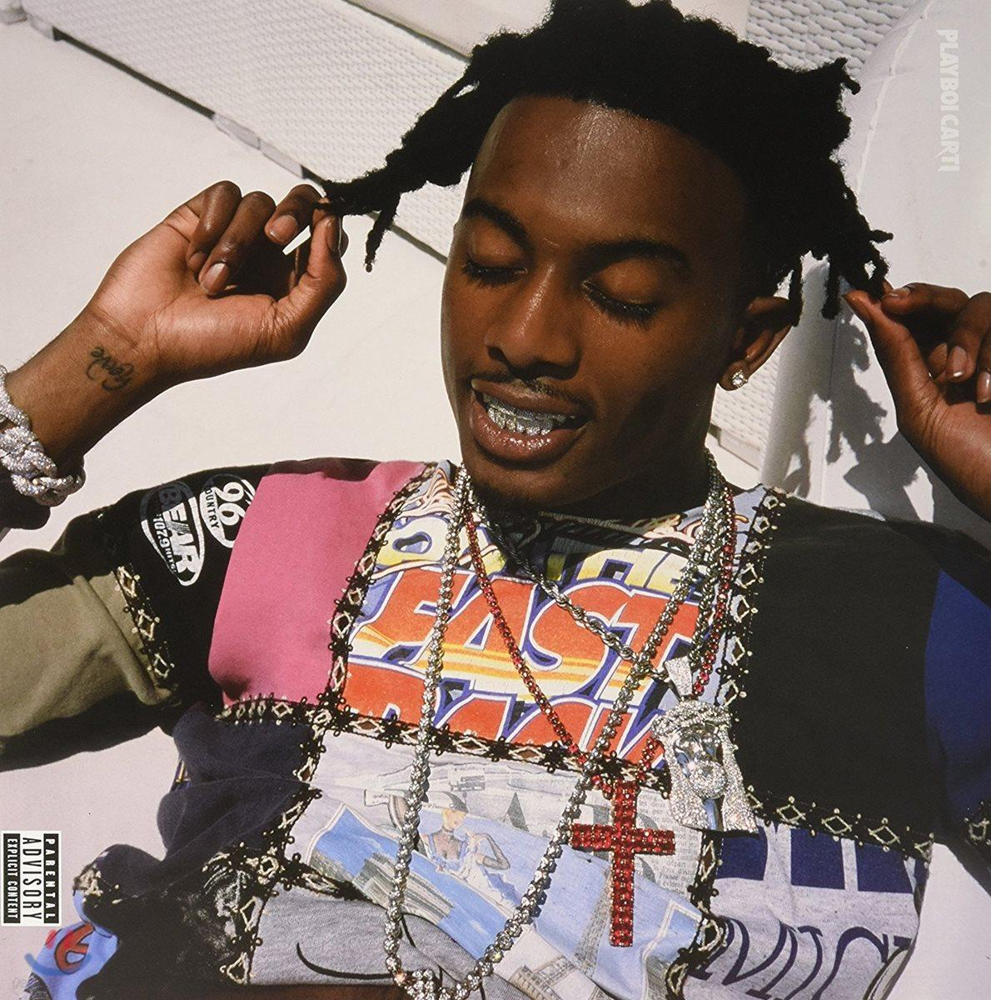
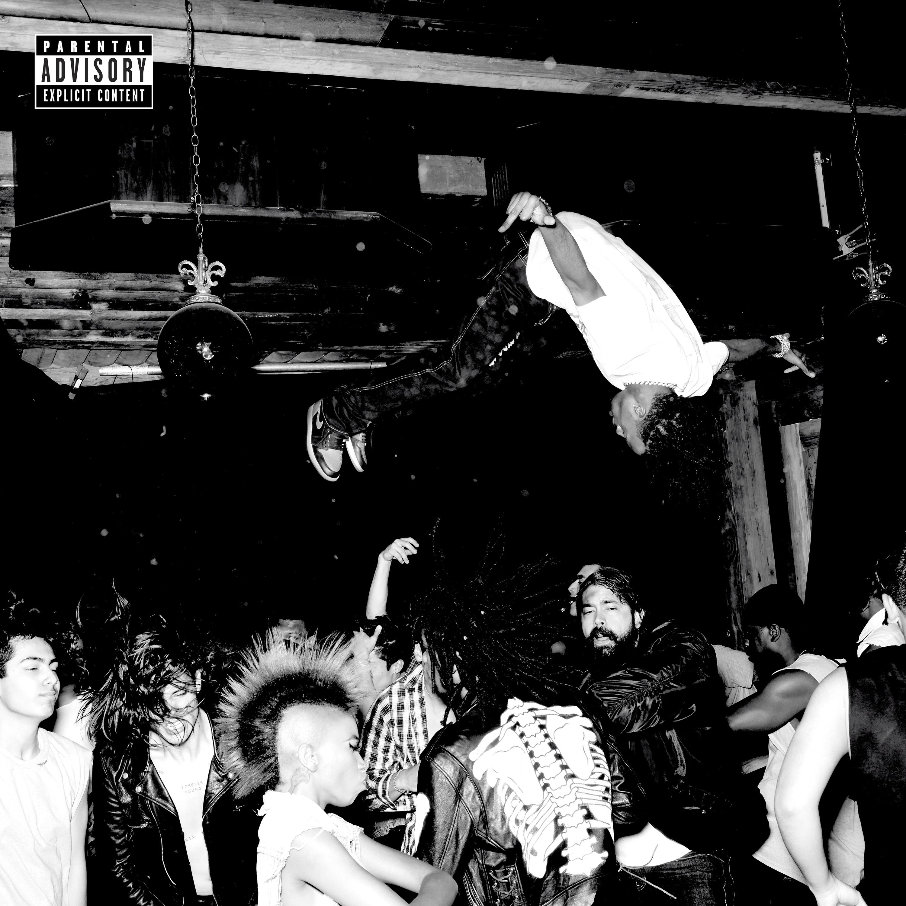
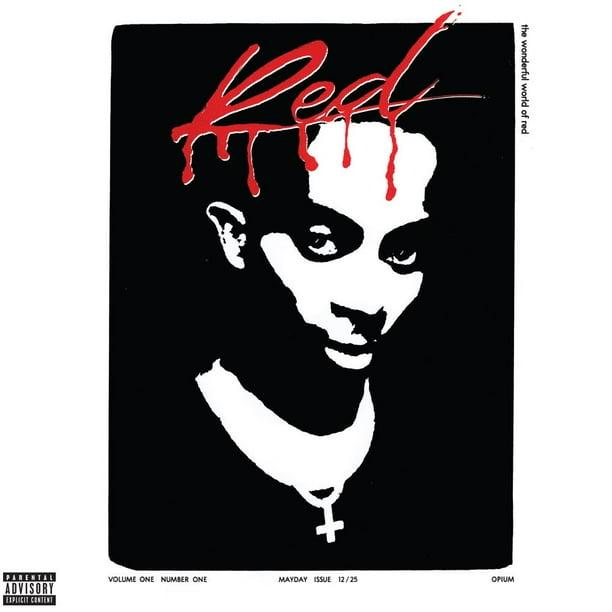
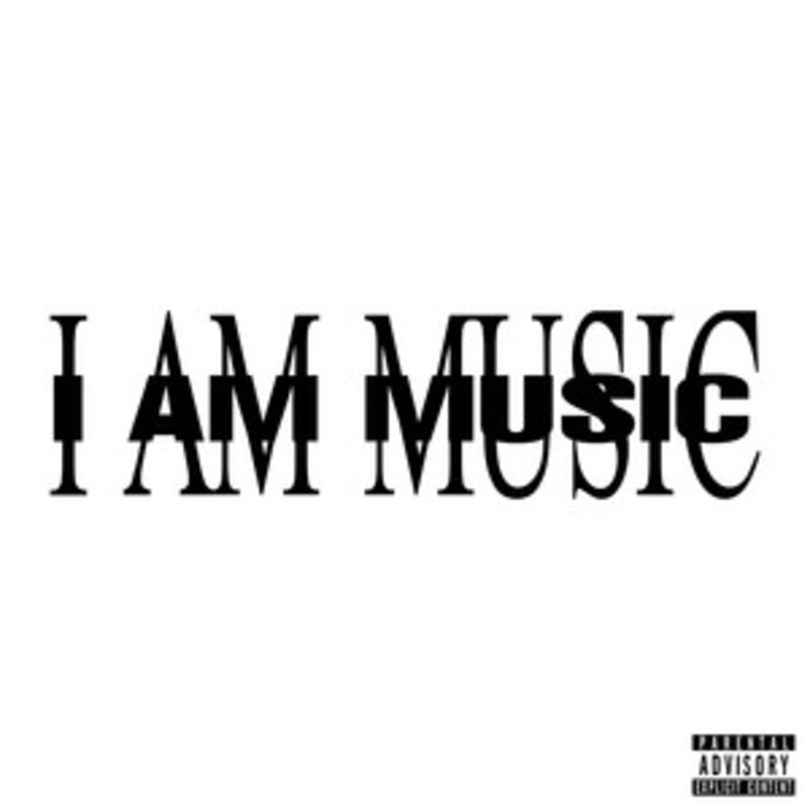
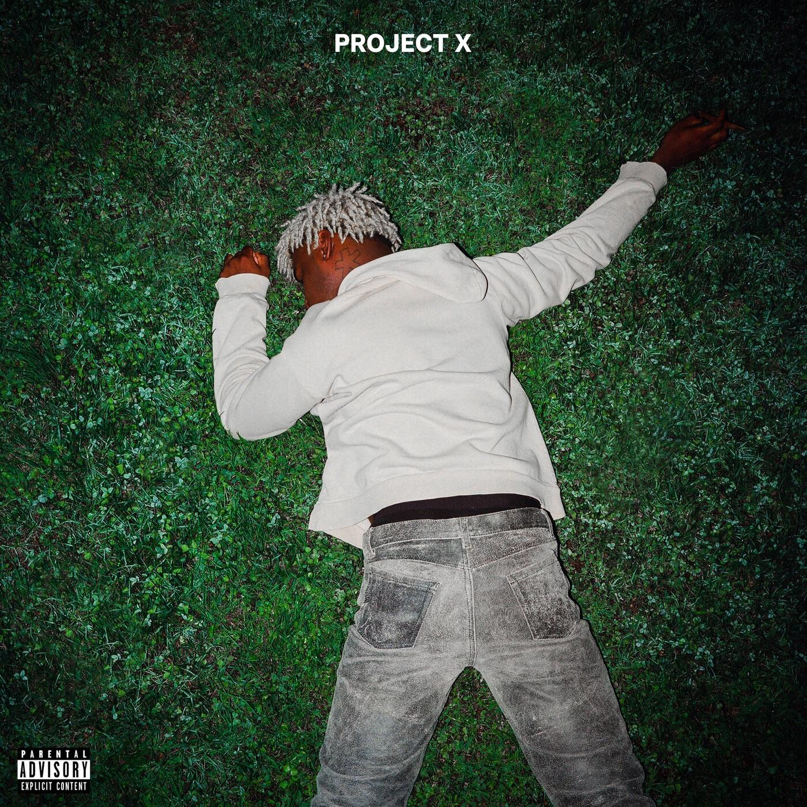
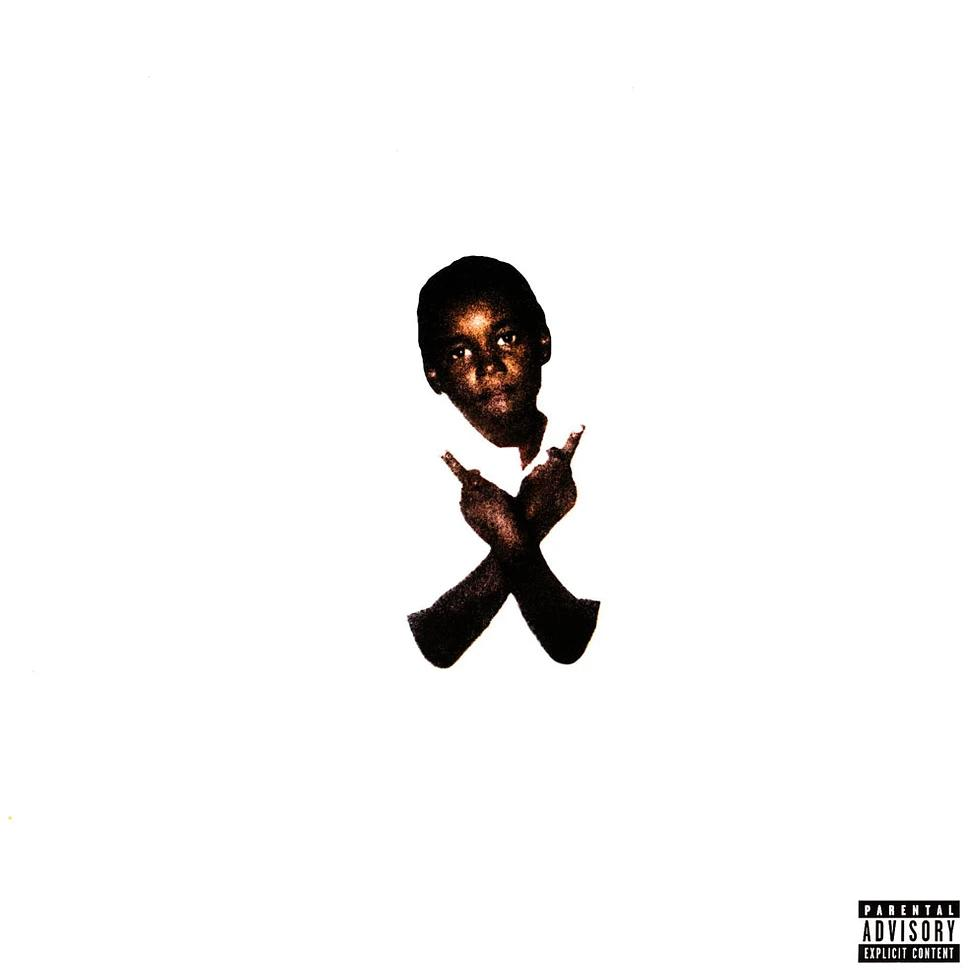
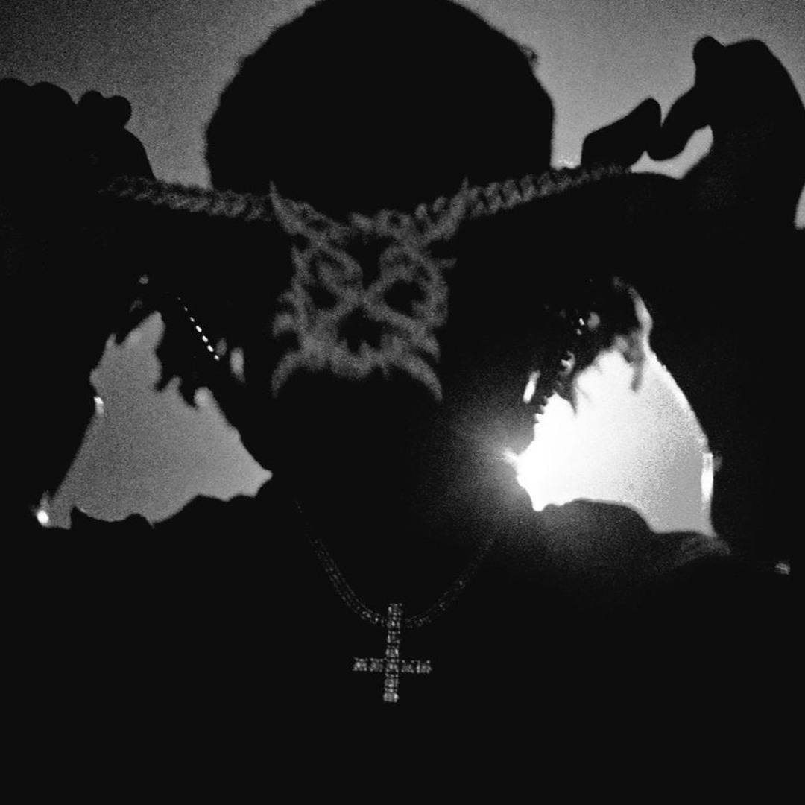
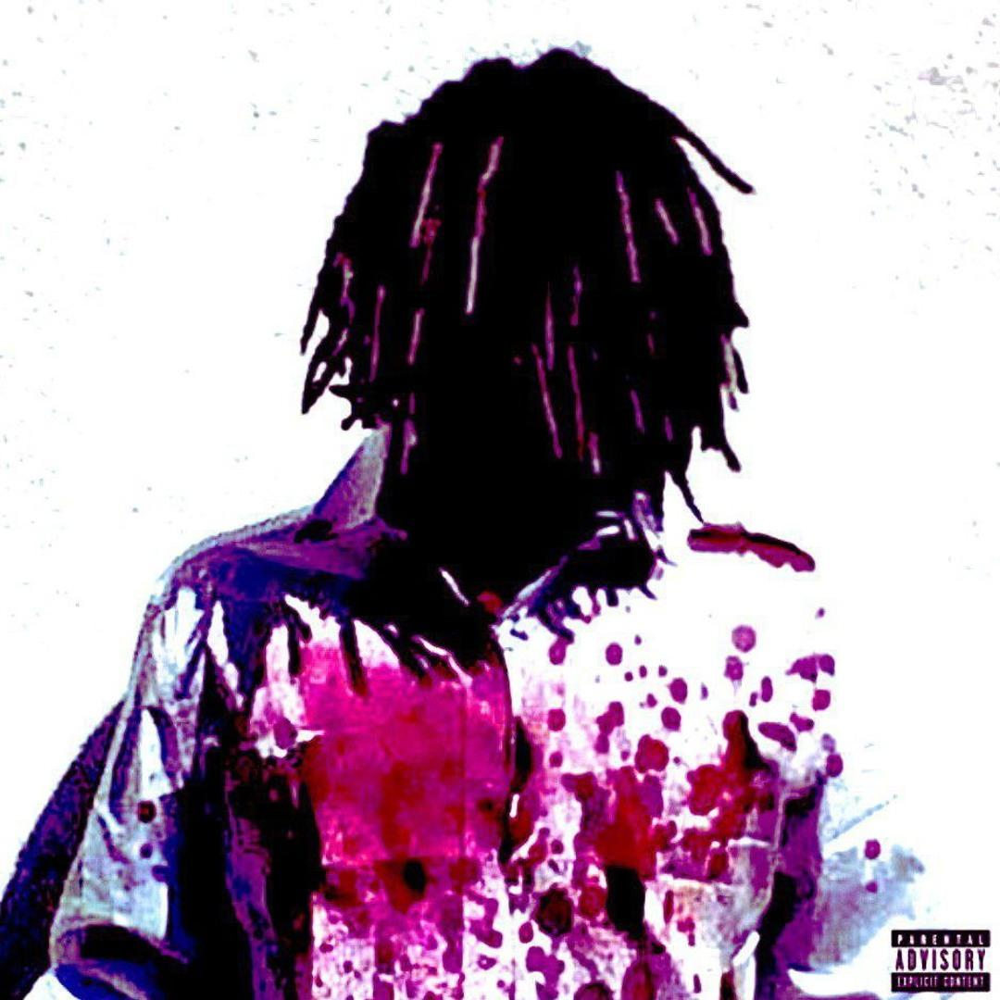

PLAYBOI CARTI
2017 · MIXTAPE
THE UNDERGROUND SOUND
CARTI × KEN CARSON
ENTER THE WORLD ↓01 / THE VAMP
Playboi Carti, born Jordan Carter, is an American rapper known for his experimental sound, distinctive vocals, and fashion. He founded the Opium record label.
REAL NAME Jordan Terrell Carter
BORN September 13, 1995/1996
BIRTHPLACE Atlanta, Georgia
RAISED IN Riverdale, Georgia
GENRE Hip-Hop, Trap, Rage
RECORD LABEL Opium, Interscope
KNOWN FOR Experimental vocals, fashion, and unique production
02 / X MAN
Ken Carson is an American rapper associated with Playboi Carti's Opium label. He is known for energetic performances, distorted production, and rage-inspired music.
REAL NAME Kenyatta Lee Frazier Jr.
BORN April 11, 2000
BIRTHPLACE Atlanta, Georgia
GENRE Hip-Hop, Trap, Rage
RECORD LABEL Opium, Interscope
KNOWN FOR Rage beats, energetic performances, and experimental music
THE DISCOGRAPHY

2017 · MIXTAPE

2018 · ALBUM

2020 · ALBUM

2025 · ALBUM

2021 · ALBUM

2022 · ALBUM

2023 · ALBUM

2025 · ALBUM
THE CONNECTIONS
Lil Uzi Vert
Travis Scott
Future
The Weeknd
Kanye West
Young Thug
Destroy Lonely
Playboi Carti
Lil Uzi Vert
Yeat
Homixide Gang
Featured collaborators, not a complete list.
THE ARCHIVE